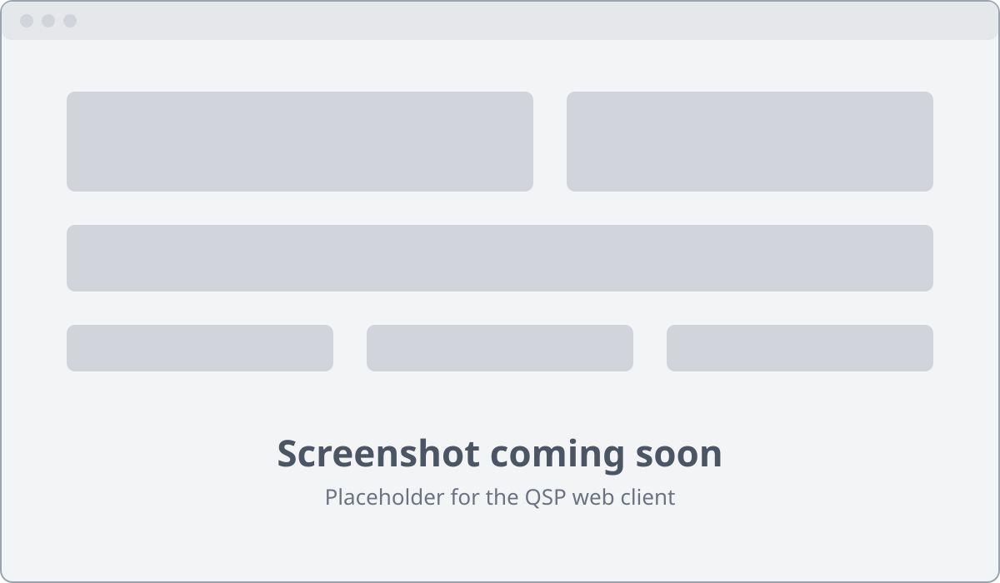

Operate your radio from anywhere.
QSP puts your own transceiver in a browser tab: tune, change mode and band, and hear the band live — from the sofa, the office or the other side of the world.
The hosted QSP service is not open yet — you can already self-host it.

What QSP gives you
-
Just a browser
Nothing to install on the computer you operate from. Open a page, sign in to a QSP service, and your rig is there.
-
Live audio
Hear the receiver in real time, with low-latency Opus audio streamed straight from your shack.
-
Your rig, via Hamlib
Frequency, mode, band and VFO control for the many transceivers Hamlib supports, over your usual CAT cable.
How it works
The agent
A small program that runs on a Linux computer next to your rig — a Raspberry Pi is ideal. It drives the transceiver through Hamlib over CAT and captures its audio from your sound interface.
The QSP services
They check who you are and tell your browser and your agent how to reach each other. That is all: once the connection is up, they step aside.
Your browser
Connects straight to your agent, peer to peer, with WebRTC. Audio flows from the rig to you, control flows from you to the rig, over that one direct link.
Get started in three steps
-
Install the agent
Install the QSP agent on a Linux machine next to your rig, connect the CAT and audio cables, and point it at your transceiver.
-
Sign in
Sign in to a QSP service from any browser. Your station and its agent show up once the agent is running.
-
Operate
Pick your station, connect, and work the band as if you were in the shack.
Free and open source
Every part of QSP is free software, developed in the open by radio amateurs. Want your own instance? A single docker compose file runs all the services on one machine.